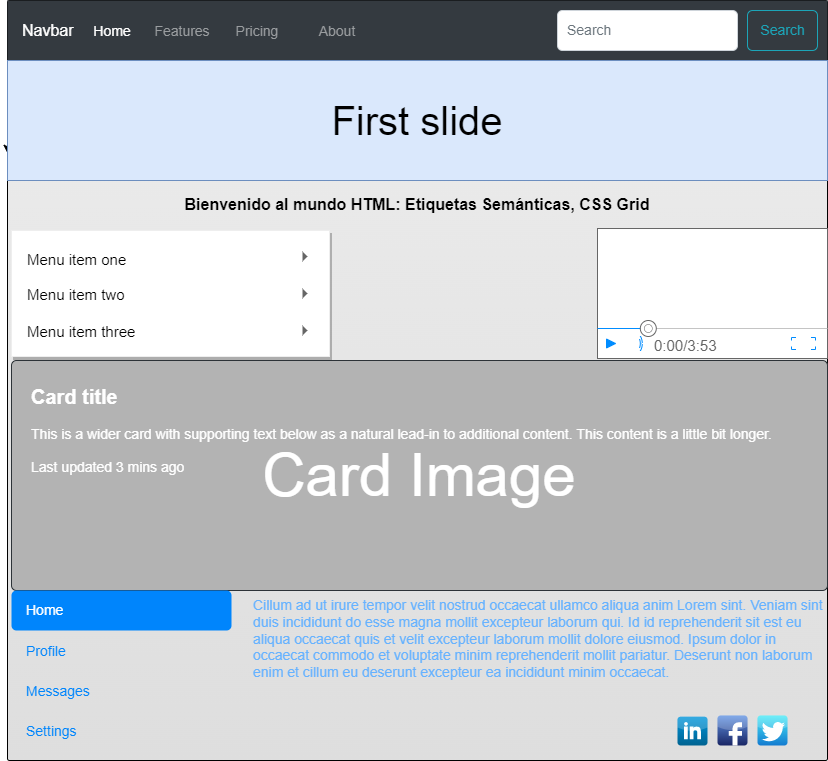

Propósito del Sitio
El diseño, la creación y programación de páginas web ha estado en constante cambio, si comparamos las paginas web de hace algunos años con las actuales se puede notar que las mismas son más dinámicas e interactivas. El propósito de este sitio es dar a conocer temas importantes para todos los interesados en el mundo del HTML5.
Etiquetas Semánticas
Las etiquétas semánticas en HTML5 se refieren a la información extra que otorgan los elementos o etiquetas del lenguaje. En la especificación HTML5 existe ya una etiqueta llamada header que viene a sustituir al elemento div de forma que la sintaxis es mucho más lógica y coherente, se trata de un tipo de etiqueta llamada semántica porque da una noción del tipo de contenido que englobará.
Son etiquetas semánticas:
header: para definir la cabecera de la página.
footer: para definir el pie de página.
nav: permite definir un elemento de navegación de la página web, como el menú principal o menú secundarios.
section: se utilizan para encerrar el código correspondiente a una sección genérica dentro de un documento.
aside: sirve para delimitar todo aquel contenido que no es directamente contenido principal de esa página en concreto, como por ejemplo bloques publicitarios, enlaces externos, citas, calendario.
article: se utiliza para definir artículos, es probablemente uno de los más importantes, ya que permite indicar cuál es el contenido de una página web.
Esquema de la estructura de una página web utilizando las etiquetas semánticas de HTML5.

CSS Grid
CSS Grid es un modelo de maquetación CSS en base a una rejilla, algo que podría parecer no tan novedoso, si tenemos en cuenta que diversas librerías de CSS lo habían intentado ya. Sistemas como 960 Grid System fueron pioneros en crear una base de código CSS para que los diseñadores pudieran posicionar los elementos en una distribución de filas y columnas. Sin embargo, ahora Grid es un estándar y no es necesario recargar ni ensuciar el código para aplicarlo. Todo se aplica directamente desde el CSS, por medio de nuevos atributos, valores y unidades con una variada sintaxis. Además, un sitio con Grid resulta sencillo de mantener y de aplicar otras herramientas de CSS3 como las mediaqueries, y, por supuesto, es totalmente adaptable a los dispositivos (responsive).

Mockup:
